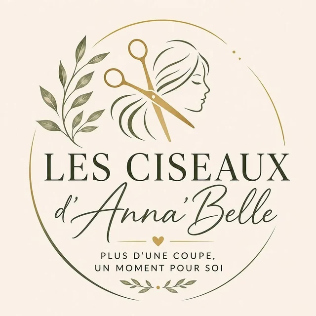

Coupe & conseil
Pour les femmes, les enfants et les hommes, avec un vrai temps d'écoute avant chaque coupe.
- Coupe femme
- Coupe enfant
- Coupe homme
- Conseil capillaire personnalisé
Salon de coiffure · Le Tampon, La Réunion
Plus d'une coupe, un moment pour soi.
Femme · Enfant · Homme · Barber
16 bis rue du Docteur Henry Roussel, 97430 Le Tampon · Salon 0262 24 30 96

L'esprit du salon
« Ici on prend le temps de vous écouter et de vous conseiller. »Les Ciseaux d'Anna'Belle, page Facebook
Du savoir-faire et une vraie attention portée à vos cheveux : chaque rendez-vous commence par l'écoute, puis une prestation personnalisée selon votre base, votre carnation et le résultat souhaité.
Une hésitation sur votre longueur, votre couleur ou votre routine ? Le conseil se donne directement au salon, avec plaisir.
Les prestations
Coupe, balayage, soins et conseil capillaire personnalisé : quatre belles façons de prendre soin de vos cheveux au salon.
Pour les femmes, les enfants et les hommes, avec un vrai temps d'écoute avant chaque coupe.
Envie de lumière, de douceur et d'un blond parfaitement fondu : blond froid, beige, miel, lumineux ou naturel.
Le soin Salvatore Réduction de Volume, pour garder votre mouvement naturel avec une chevelure plus souple et plus facile à coiffer.
Un rituel Végétalement Provence riche en actifs végétaux, tout en douceur.
Au salon : Davines & Végétalement Provence. Shampoings, soins hydratants, nourrissants ou protecteurs, choisis avec vous selon les besoins de vos cheveux. « Parce que de beaux cheveux commencent aussi par de bons produits à la maison. »
Demander conseilPetit guide des longueurs
Identifier votre longueur aide à choisir la prestation la plus adaptée : elle guide le temps de travail et la quantité de produit nécessaire.
Touchez une mèche pour voir votre longueur. En cas d'hésitation, demandez conseil directement au salon 🤎
Offrir pour Noël
Une jolie idée sous le sapin : un moment chez Les Ciseaux d'Anna'Belle, pour une maman, une amie, un ado ou un papa.
Coupe, balayage ou soin : la personne choisit sa prestation au salon.
Coupe + barbe, les mardis et mercredis.
Des soins Davines ou Végétalement Provence, choisis avec les conseils du salon.
Rendez-vous
Adresse · 16 bis rue du Docteur Henry Roussel, 97430 Le Tampon
Réservations · 0692 05 04 45
Salon · 0262 24 30 96
E-mail · lesciseauxdannabelle@orange.fr
Barber · mardi et mercredi, 9h–18h non-stop
Bon à savoir · pour les prestations longues, un acompte valide votre réservation.
Plus d'une coupe, un moment pour soi